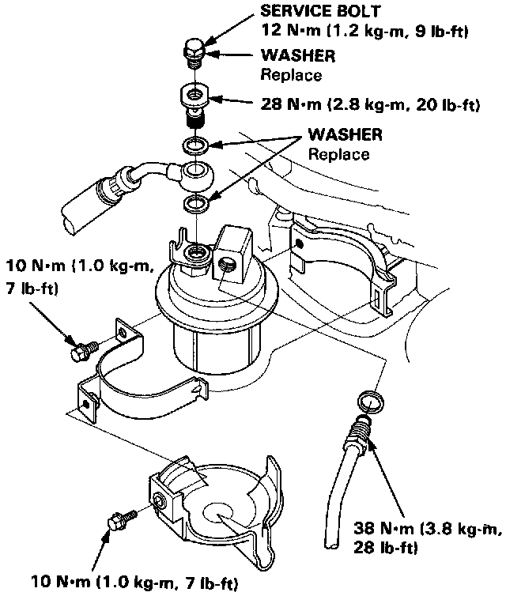

Fuel Filter: Service and Repair

Fuel Filter Replacement
WARNING: Do not smoke while working on fuel system. Keep open flame away from work area.
The filter should be replaced every 4 years or 60,000 miles (96,000 km), whichever comes first or whenever the fuel pressure drops below the specified value (265 - 314 kPa, 2.7 - 3.2 kg/cm2, 38 - 46 psi with the pressure regulator vacuum hose disconnected) after making sure that the fuel pump and the pressure regulator are OK.
1. Place a shop towel under and around the fuel filter.
2. Relieve fuel pressure.
3. Remove the 12 mm banjo bolt and the fuel feed pipe from the filter.
4. Remove the fuel filter clamp and fuel filter.
5. When assembling, use new washers, as shown.
6. Tighten as follows:
Service Bolt: 9 ft.lb.(1.2 kg-m)
Banjo Bolt: 20 ft.lb.(2.8 kg-m)
Fuel Line: 28 ft.lb.(3.8 kg-m)
Bracket Clamp: 7 ft.lb.(1.0 kg-m)
NOTE: Clean the flared joint of high pressure hoses thoroughly before reconnecting them.